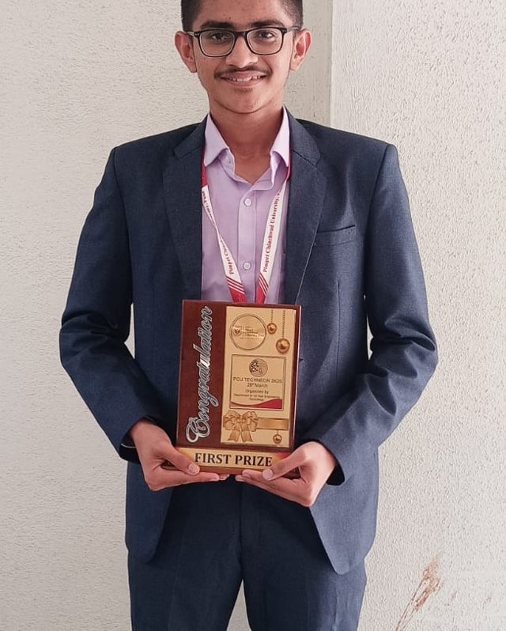

Dedicated to Technology That Solves Real Problems.
I am a third-year Computer Science and Engineering student at Pimpri Chinchwad University (PCU), Pune. My path in computer science began with curiosity about how complex algorithms shape everyday life, and has evolved into an active pursuit of building tangible, human-centred software systems.
Rather than building purely theoretical projects, I seek out areas where technology is currently failing people. My flagship civic project, Poverty Aid Identifier, was born from observing how difficult it is for underprivileged citizens in Maharashtra to navigate 16+ state and central welfare schemes without technical or bureaucratic hurdles. By combining lightweight multilingual interfaces (Marathi, Hindi, English) with Google Gemini AI and transparent grievance heatmaps, the application proves that AI can directly empower grassroots communities.
In competitive technology hackathons, I explore cutting-edge paradigms including Generative AI telemetry (like StadiumPulse for arena crowd safety during PromptWars Virtual) and low-cost IoT hardware (like the Smart Street Safety Beacon).
I prioritize clean architecture, semantic code, comprehensive documentation, and ethical artificial intelligence. When I’m not writing code, I enjoy dissecting research papers, participating in developer hackathons, and collaborating with peers on open-source initiatives.
Civic-Tech Innovation
Making digital government services and transparent grievance tracking frictionless for every citizen.
Practical GenAI
Grounding Large Language Models on real-time telemetry, structured JSON outputs, and domain constraints.
Security & Reliability
Implementing secure authentication, rate limiting, and resilient fallback states across web services.
Milestones & Achievements
Key competitions, university recognitions, and technical hackathons.
Smart India Hackathon 2026 — Certificate of Selection
Pimpri Chinchwad University · Team AidLink AI (012)
Selected as a core team member representing PCU at the national Smart India Hackathon based on exceptional problem-solving and technical prototyping in the university internal qualifiers.
PromptWars Virtual — Certificate of Appreciation
Google for Developers · Hack2skill (H2S)
Recognized for valuable contribution and verified submission of an innovative Generative AI application for Challenge 4 (StadiumPulse).
Adobe University Hackathon
Organized by Adobe
Participated in nationwide collegiate engineering challenge designing innovative developer tools and user-centric workflows.
First Prize — PCU TECHNEON 2K25
Pimpri Chinchwad University, Pune
Awarded First Position in the university-level Project / Poster / Model competition for engineered software innovation and presentation excellence.
Unstop Engineering Daily Quiz — September Series
Unstop National Engineering Series
Four Certificates of Excellence with nationwide daily ranks of 31st, 20th, 40th, and 79th in algorithmic problem solving and core CS foundations.
Pimpri Chinchwad University, Pune
Bachelor of Technology in Computer Science and Engineering (B.Tech CSE) · 2024 – 2028
Enrolled in rigorous computer science coursework spanning Data Structures & Algorithms, Object-Oriented Software Design, Relational Database Management Systems, Operating Systems, Computer Networks, and Artificial Intelligence. Actively engaged in collegiate technical clubs and hackathon leadership.